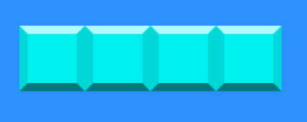
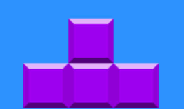
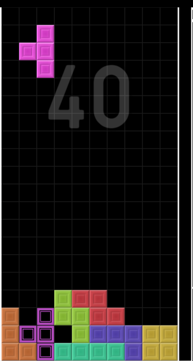

Tetris
Best Pieces
The best pieces in my option is the T piece and the I piece. These pieces will be able to help you downstack
and counterspike the opponent. When making a T spin the amount of lines cleared doubled is the amount you
will send to your opponent, with the exception of a tsipin single. While the I piece can help you clear four
lines at once when having a good well. Using these two pieces togther you able to create a massive spike.


I-piece
The I-piece will enable you to clear the most amount of lines at once. If you haven't noticed all the pieces
are made up of 4minoblocks and all the pieces are different, leading there to be 7 different pieces. The
I-piece is the longest piece meaning that you are able to clear four lines at once.

T-piece
The T-piece will enable you to send double the amount of lines you clear in the form of a t-spin, with the
exception of a t-spin single. For example when you clear two lines with a t-spin you will send four lines to
the opponent. Meaning that using this piece you are able to be as efficient as possible.
